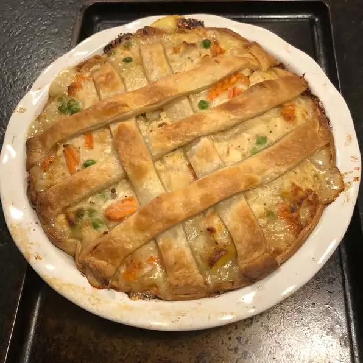

Chicken Pie

Description
A delicious chicken pie made from scratch with carrots, peas, and celery in a pre-made crust. Add thyme and poultry seasoning for more flavor.
Ingredients
- Boneless, skinless chicken breasts (cut into cubes) are ideal for making classic chicken pot pie.
- This chicken pot pie recipe calls for the usual suspects: peas, carrots, onions, and celery. You could toss in some mushrooms or green peppers if you want to incorporate more veggies.
- The chicken pot pie filling starts with a roux made with butter and all-purpose flour.
- You'll need two unbaked pie crusts. If you opt for the homemade route, you can't go wrong with our Butter Flaky Pie Crust recipe — but store-bought is perfectly fine.
Steps
- Preheat the oven to 425 degrees F (220 degrees C.)
- Combine chicken, carrots, peas, and celery in a saucepan; add water to cover and bring to a boil. Boil for 15 minutes, then remove from the heat and drain
- Place chicken and vegetables in the bottom pie crust. Pour hot liquid mixture over top. Cover with top crust, seal the edges, and cut away any excess dough. Make several small slits in the top crust to allow steam to escape.
- Bake in the preheated oven until pastry is golden brown and filling is bubbly, 30 to 35 minutes. Cool for 10 minutes before serving.